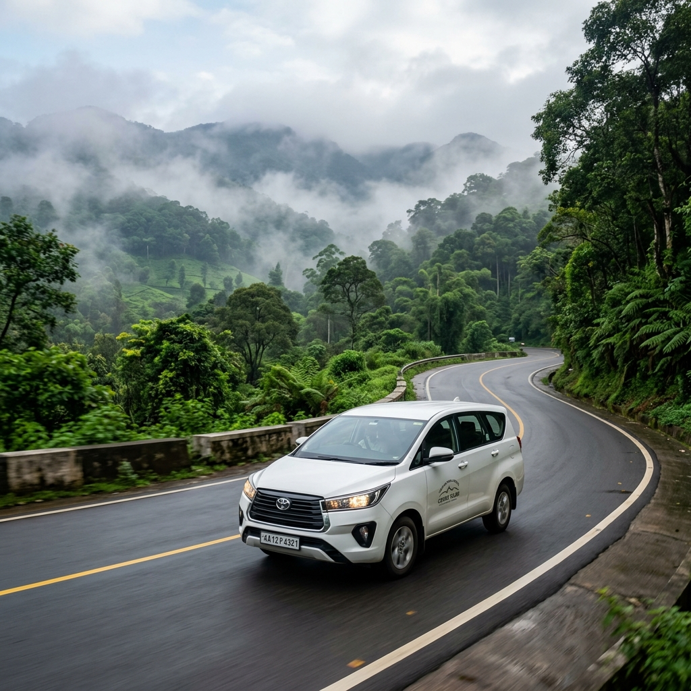

Discover Coorg's Beauty with Our Sightseeing Taxi Packages
Experience the breathtaking landscapes, coffee plantations, waterfalls, and cultural sites of Coorg (Kodagu) with our comfortable sightseeing taxi services. Our knowledgeable drivers double as informal guides, sharing interesting facts about the places you visit while ensuring a comfortable and memorable journey through Scotland of India.
Popular Sightseeing Packages
Half-Day Tour (4 Hours)
Covering 2-3 major attractions
₹2,000 - ₹3,500
Full-Day Tour (8 Hours)
Covering 4-5 major attractions
₹3,500 - ₹6,000
Custom Tour
Tailored to your interests
₹2,500+/hour
Top Attractions Covered in Our Tours
- Abbey Falls: Spectacular waterfall surrounded by coffee plantations and spice estates
- Raja's Seat: Beautiful garden offering panoramic views of misty hills and valleys
- Dubare Elephant Camp: Interact with elephants, watch bathing and feeding routines
- Talakaveri: Origin of the sacred River Cauvery on Brahmagiri hills
- Bhagamandala: Sacred confluence of three rivers with ancient temples
- Namdroling Monastery (Golden Temple): Largest teaching center of Tibetan Buddhism in India
- Nisargadhama: Island picnic spot with bamboo groves and deer park
- Madikeri Fort: Historical fort with museum and panoramic views
- Omkareshwara Temple: Unique blend of Gothic and Islamic architecture
- Coffee Plantations: Guided tours of coffee estates with tasting sessions
- Iruppu Falls: Sacred waterfall amidst Brahmagiri range
- Nagarhole National Park: Wildlife sanctuary for jeep safaris (entry extra)
Why Choose Our Sightseeing Taxi Service?
- Experienced drivers familiar with all tourist routes
- Comfortable, air-conditioned vehicles
- Flexible itineraries - customize your tour
- Punctual and reliable service
- Knowledge about local culture and attractions
- Safe and hygienic vehicles
- Assistance with ticket purchases where applicable
Sample Itineraries
| Tour Type | Duration | Attractions Covered | Vehicle Type | Price Range |
|---|---|---|---|---|
| Coorg Heritage Tour | 8 Hours | Madikeri Fort, Omkareshwara Temple, Raja's Seat | Sedan/SUV | ₹3,500 - ₹4,500 |
| Waterfall & Nature Tour | 8 Hours | Abbey Falls, Iruppu Falls, Nisargadhama | Sedan/SUV | ₹3,800 - ₹5,000 |
| Spiritual & Cultural Tour | 8 Hours | Talakaveri, Bhagamandala, Namdroling Monastery | Sedan/SUV | ₹4,000 - ₹5,500 |
| Coffee Plantation Experience | 6 Hours | Coffee estate tour, processing unit, tasting session | Sedan/SUV | ₹3,000 - ₹4,200 |
Vehicle Options for Sightseeing

Sedan Cars
Etios, Desire, or similar - ideal for 1-4 passengers with luggage

SUVs
Ertiga, XUV500, or similar - comfortable for families up to 6 passengers

Innova Crysta
Premium MPV with extra space and comfort for sightseeing tours
Frequently Asked Questions - Sightseeing Taxi
Can I customize my sightseeing itinerary?
Absolutely! We specialize in creating customized itineraries based on your interests, duration, and preferences. Just let us know what you'd like to see and we'll design the perfect tour for you.
Are entrance fees included in the package?
No, entrance fees to attractions are not included in our taxi service charges. You'll need to pay these directly at each site. However, our drivers can assist with purchasing tickets where needed.
Do your drivers act as tour guides?
While our drivers are not certified tour guides, they are locals with excellent knowledge of Coorg's attractions, routes, and general information about the places you'll visit. They can provide helpful insights and recommendations throughout your journey.
What is the best time of day for sightseeing in Coorg?
Early morning (7-9 AM) and late afternoon (3-5 PM) are ideal for sightseeing in Coorg. The weather is pleasant, and you'll avoid the midday crowds at popular attractions. Morning visits often offer the clearest views of the hills and valleys.